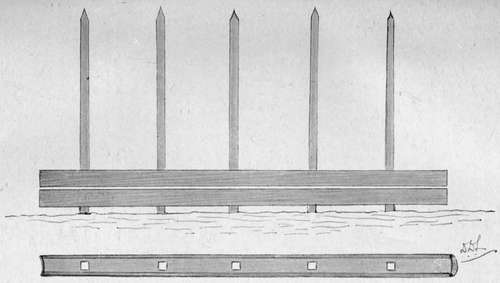
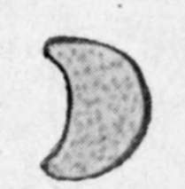

Remarks On Sport And Making A Home In The Bush. Part 4
Description
This section is from the book "Wild Life In Central Africa", by Denis D. Lyell. Also available from Amazon: Wild Life in Central Africa.
Remarks On Sport And Making A Home In The Bush. Part 4
For the verandah another line is made, and this can be marked by deepening the line with a hoe, so that while at work the men's feet will not obliterate the mark. I made my hut 27ft. wide inside, with a verandah of 9ft., which made a total diameter of 45ft., as of course the verandah goes right round. Then I made a smaller hut near, 6ft. less inside, with a verandah all round, and the two huts I joined with a passage. I had some difficulty in knowing what kind of doors to make, as the ordinary native door is made from the stalks of maize when dry (called impaissi), and these are loose affairs and soon get broken. At last I thought of getting the poles of the Chiwali palms, which I knew grew near the Bua, a few miles off, so I sent men to cut them, and when they had arrived I got two men to tackle the doors, which are made by putting five or six stakes into the ground and then making holes in the palm sticks and pushing them on. A strong wooden pole is put on as a backstay, and then a strip of palm stick is nailed on. I managed to get some nails from the Government officer at Fort Manning (six miles off), and also some rough boards out of which I fashioned a table, a few racks, and some small windows. He also kindly lent me a saw, plane, two augers, and a few tools. Having no hammer, I did the best I could with a small American axe I possessed, and I may say such a tool is most useful in the bush for all kinds of work. The natives are very expert axemen in a way; although they doubtless could not compete with the European bushmen of Australia, New Zealand, and Tasmania. The natives' axes are made of soft wrought-iron, and are seldom wider than 1½in. in the blade. Some of the African trees are very hard and they will splinter a hard-tempered European axe. In building huts or a house, one has to study the prevailing winds, and the natives will be able to say from what direction they usually come. The door should be placed on the lee side so that the wind will not rush in and bring dirt with it, and blow out the lamps or candles.
Stick showing holes chipped out for insertion on uprights.
Section of Chiwali stick.
Showing How Palm Pole Door Is Made
When the poles for the walls had been cut and trimmed to the right length they were put in the ground, and strips of bovu wood were brought and the poles firmly bound in four circles.
Then long poles for the roof were procured, and care should be taken not to get wood that the borer will eat into. Masuko and maula are best, as these are common trees over most parts of the country. To get the pitch of the roof, four men hold up a pole each while another stands about 25 yards off to see that the angle is right. Then these four sticks are firmly tied and others are put in between and tied. Some of these poles, especially the first four, have forked ends which are pushed into one another and the spaces form gaps to insert other poles into. Then, when the poles are about a foot apart on the tops of the wall poles, the roof is fastened with strips of wood firmly tied with maluzi string. The floors of the huts should be raised about 9 inches or a foot, and then children can be got to hammer it with slabs of wood flattened at the ends. The verandah is made by placing poles from one of the circular strips of binding on the roof to poles laid across the upright verandah poles, and these should be at nearly the angle of the upper part of the roof. I was fortunate enough to find some white clay in a dambo not far away, which was of a nice French grey colour when it had dried on the walls of the huts.
I got native women to smooth up the floor with flat stones, and to do this they got some dark coloured earth, which was made into a paste, and when half dry the flat stones were rubbed over it, making a fine polished surface, which, however, did not last long, even when covered with mats and skins. I am afraid this account of hut building will prove rather tedious and dry reading, and though I would like to get on to the shooting I must still give a few lines about the thatching of the roof. If the grass is wanted very clean it is possible to comb it out on a kind of large hackle, but more than half of it will disappear in doing this, as it is full of short fibre.
So as to have the interior nice, I got about twenty-five bundles of sicaira grass, which is naturally clean, of a pale yellow colour, and very strong and long. This I put on under the ordinary grass and it prevented short stalks and grass seeds from falling into the hut. The grass here usually seeds about May or June, so it is best, if it is full of seeds, to leave it lying for a few days in the sun and then shake it well, to get rid of the thousands of sharp seeds, which are very disagreeable if they fall on one's blankets, clothes, or into the food.
It is most interesting superintending such work, and if the natives are stupid or aggravating it is best to be patient and try to teach them. The climate often makes Europeans most irritable, and the intensely aggravating qualities of some natives make it very hard for a man to keep his temper, especially if he be of a quick, sensitive, and energetic nature. If a native gets more than one order at a time he will only remember the last. A white man, if he is asked to do three things, usually does them in the order named ; not so a native, for he would likely forget the two former orders, and possibly the last, too, as he would get hopelessly muddled.
I think all young men wrho intend to live in a wild country should have some knowledge of the following subjects :
1.—Gunnery—shooting with rifle and gun.
2.—Zoology and taxidermy.
3.—Mechanics, including motor and ordinary cycle repairing.
4.—Carpentry and wood work.
5.—House building, brick making, and some knowledge of surveying.
6.—Horses, riding, and some knowledge of veterinary work.
7.—Stock—such as cattle, sheep, goats, and pigs.
8.—Medicine and rough surgery.
9.—Gardening, especially vegetable growing and planting.
10.—Boating and fishing.
11.—Rough camp life and cookery.
12.—Skinning and butcher work.
Any youth who has some practical knowledge of these subjects will make a most capable colonist. In wild countries I have often met men who could not use a saw, hammer, or file ; and as for using an axe or adze, they would probably have amputated a toe at the first attempt. Some could not even clean a rifle or gun properly, and their knowledge of all useful subjects was practically nil. In most of our best schools boys are now taught many useful subjects, and in most cases such knowledge will be vastly more useful to them in after life than a knowledge of extinct languages, such as Latin or Greek.
Certain very sensitive and refined persons might turn up their noses at taxidermy, or skinning and butcher work ; but it is quite possible to retain refinement, and yet have a knowledge of how to use one's hands and brains ; and it will certainly lead to comfort in the long run.
There are doubtless thousands of Britons living at home who would be glad to leave their occupations and go abroad; but circumstances prevent them doing so, and they get rid of superfluous energy by playing games such as football and cricket. But such games, strenuous exercise though they may be, are a very inferior training for a wild natural life in a primeval country.
It has often been proved that the best men for a rough life abroad are the moderate sized, wiry individuals, and not the large, lusty men, who usually are the first to break down under prolonged hardship and discomfort.
The same applies to the natives of Central Africa, and when starting out on a hard trip I usually pick out the smaller men, some of whom show little fat or muscle on their bodies.
(Since the completion of this volume a new regulation has come into force in Nyasaland regarding the occupation of Crown lands, and a man can no longer build a permanent hunting camp in the bush, or he will be liable to a penalty of £100 fine and a further penalty of £10 a day after notice to quit has been given.
I think this is rather a harsh and unjust lawT when applied to parts far removed from civilisation, and it is evident that there is one law for the blacks and another for the whites, for the former can go where they like, build villages, and cut timber on Crown lands.
Land is no longer sold here by the Administration as it used to be, and it can now only be leased for a term of seven, fourteen, or twenty-one years ; so if a man wishes to buy land, he can only do so from people who acquired it before the new regulations came out.
Of course a man can still travel about and pitch a tent; and, I suppose, make a rough shelter, and use timber for firewood; but, as I have said, he cannot erect a permanent shooting camp here, and spend his time hunting and making notes on natural history, as I did, without special permission, and this, I fancy, it would be difficult to get at the present time.)
Continue to:
- prev: Remarks On Sport And Making A Home In The Bush. Part 3
- Table of Contents
- next: Chapter II. Shooting In Central Angoniland (Nyasaland)